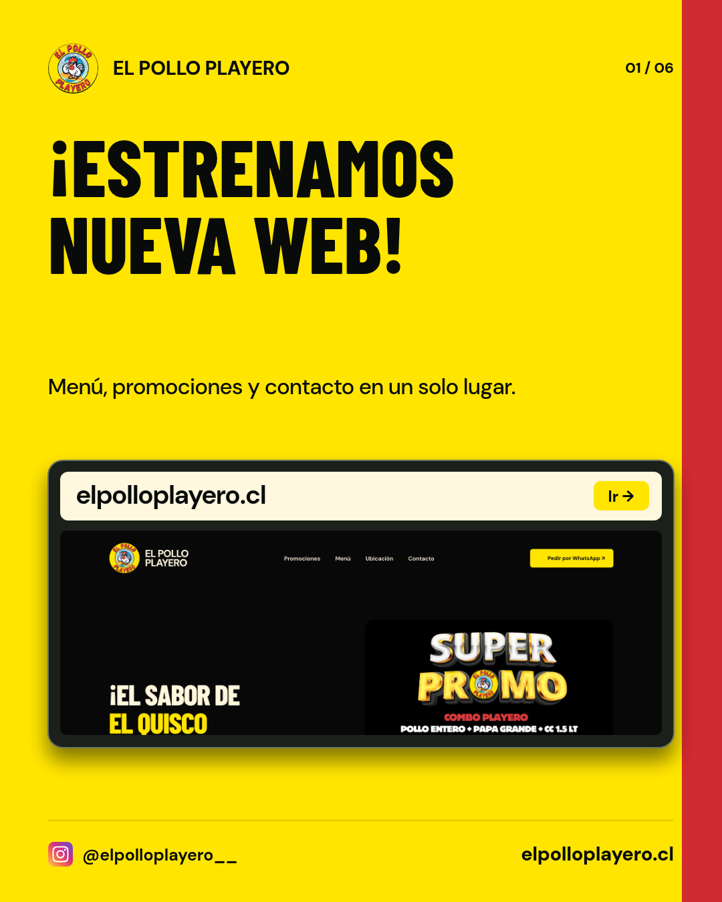
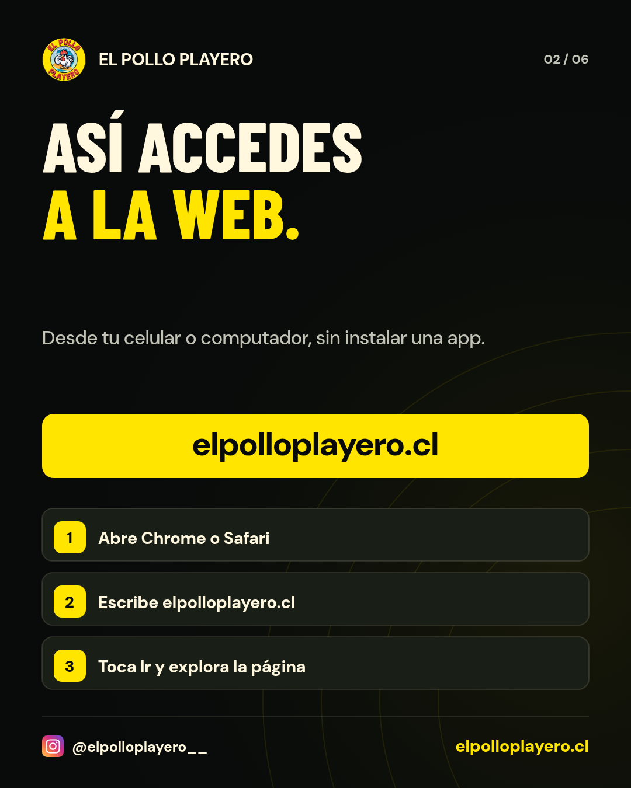
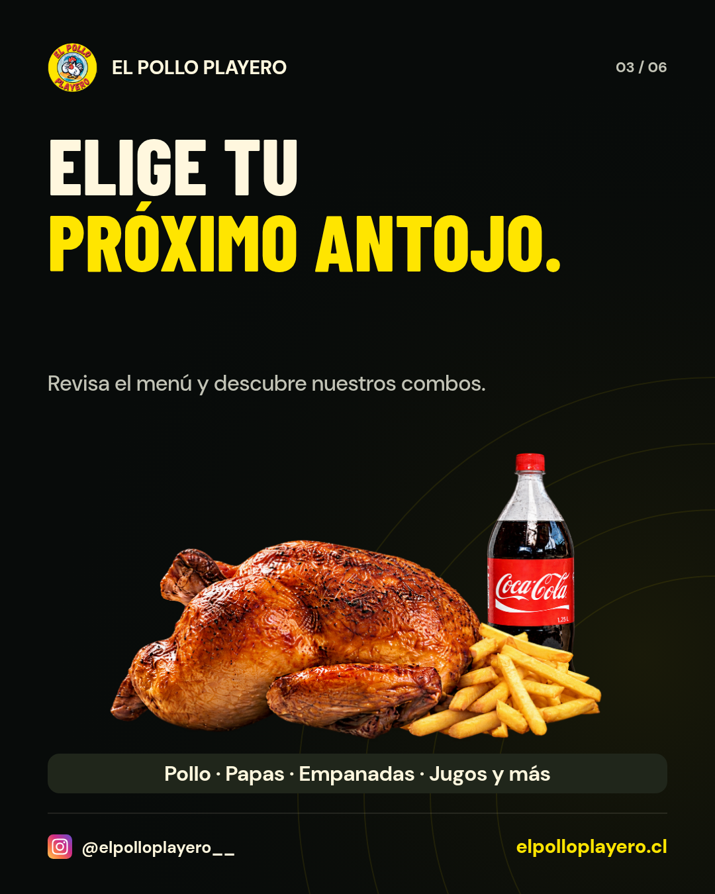
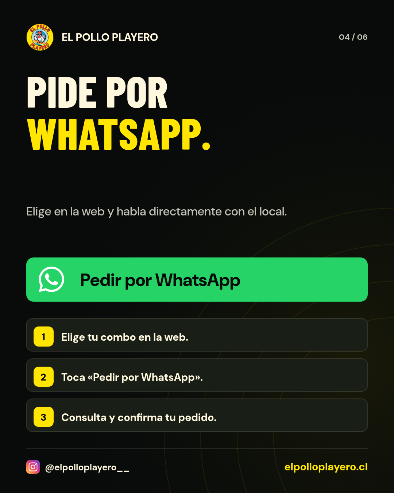
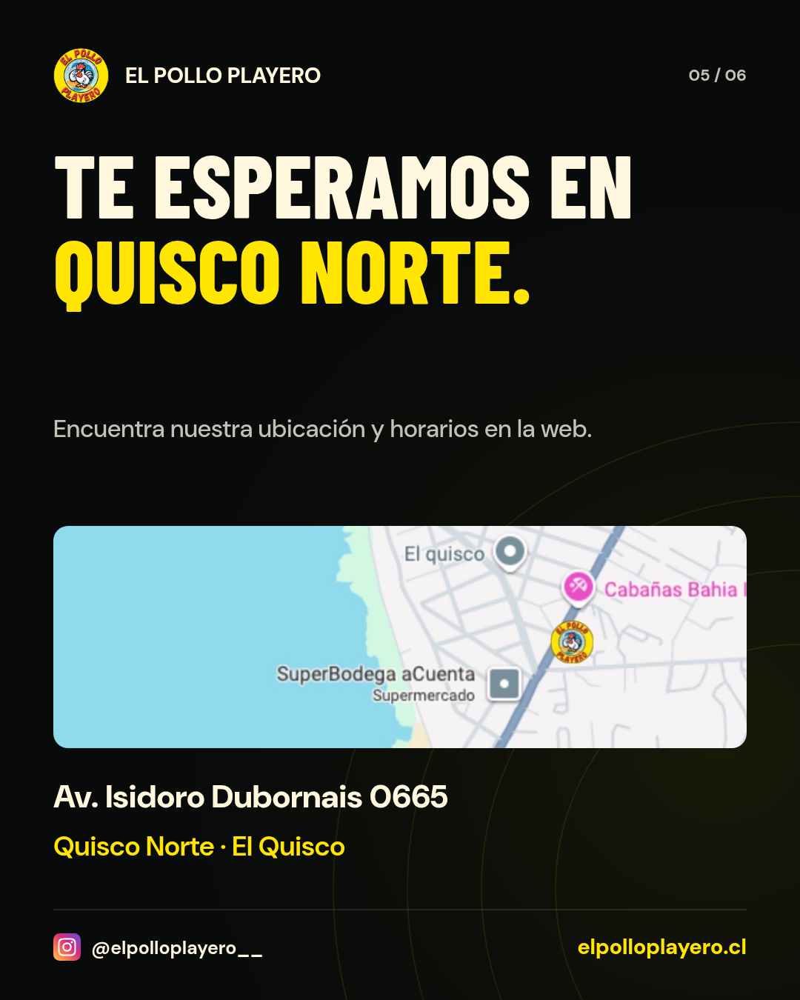
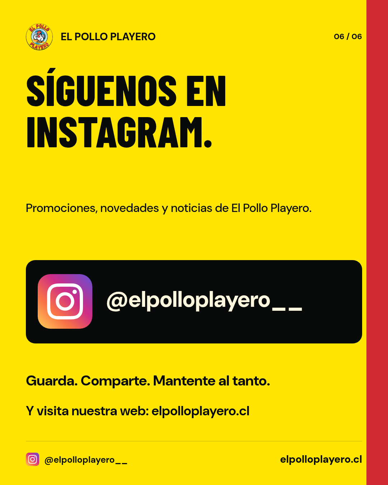

Reel de lanzamiento
40 s · 1080 × 1920 · 30 fps · Cómo acceder, menú, pedidos e Instagram
CAMPAÑA DE LANZAMIENTO
La campaña revisada: cómo entrar a elpolloplayero.cl, revisar el menú, descubrir combos, pedir por WhatsApp y seguir las novedades en Instagram. Incluye ubicación, iconos vectoriales correctos y composiciones rectas.
Para guardar los archivos, abre esta dirección directamente en Chrome o Safari. Si una imagen o un video se abre en otra pestaña, usa Descargar o Compartir → Guardar en Archivos/Fotos.
40 s · 1080 × 1920 · 30 fps · Cómo acceder, menú, pedidos e Instagram
20 s · 1080 × 1920 · Web, WhatsApp e Instagram
Añade en Instagram el sticker de enlace con https://elpolloplayero.cl/.
Formato 4:5 · 1080 × 1350. Súbelas en este orden en una sola publicación.





